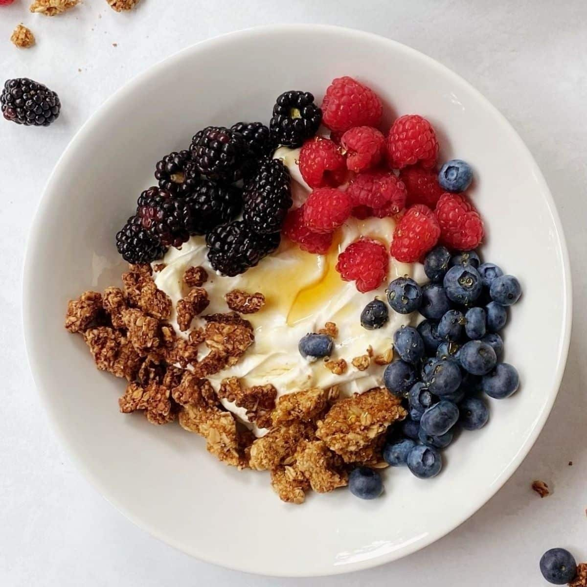

Easiest breakfast for busy days

This is an easy everyday breakfast that is nutritionally complete and easy to prepare.
You can eat this every weekday for the rest of your life and never get bored of it
because of how customizable it is.
Ingredients
- Yogurt
- Granola
- Fruits of your choice (Variety of berries are recommended)
- Honey
Steps
- Put unsweetened greek yogurt on bowl.
- Stir it until it starts getting a thicker consistency
- Top it off with your granola and fruits on different sides for color contrast,
leave a hole in middle open.
- Drizzle honey in that pool you left.
- You can also add spices such as cinnamon and cocoa powder to your yogurt,
there are endless options up to your imagination.
Now start working, you have a lot to do.